<title>Supports Remis à Neuf</title>

<link rel="preconnect" href="https://fonts.googleapis.com">
<link rel="preconnect" href="https://fonts.gstatic.com" crossorigin>
<link href="https://fonts.googleapis.com/css2?family=Manrope:wght@400;500;600;700&family=IBM+Plex+Mono:wght@400;500&display=swap" rel="stylesheet">

<style>
/* Layout : séquence éditoriale verticale. Sections numérotées séparées par des
   filets, en-têtes asymétriques, spécimens posés sur leur fond réel. */
:root{
  --bg:#faf8f5;
  --surface:#ffffff;
  --ink:#171918;
  --muted:#6e716d;
  --faint:#a0a29e;
  --line:#e5e1d9;
  --accent:#a88f69;
  --sand:#c9b08a;
  --charcoal:#171918;
  --paper-fixed:#faf8f5;
  --warn-bg:#f6efe3;
  --warn-line:#d9c49e;
  --shadow:0 24px 60px -40px rgba(23,25,24,.5);

  --display:"Manrope",-apple-system,"Segoe UI",sans-serif;
  --mono:"IBM Plex Mono",ui-monospace,"SFMono-Regular",Consolas,monospace;

  --max:1080px;
  --gut:clamp(20px,5vw,56px);
  --sec:clamp(56px,8vw,104px);
}
@media (prefers-color-scheme:dark){
  :root:not([data-theme="light"]){
    --bg:#121413;
    --surface:#1b1e1d;
    --ink:#f2f0ec;
    --muted:#9fa29e;
    --faint:#787b77;
    --line:rgba(255,255,255,.13);
    --accent:#c9b08a;
    --warn-bg:#241f16;
    --warn-line:#6b5a3c;
    --shadow:0 24px 60px -40px rgba(0,0,0,.8);
    color-scheme:dark;
  }
}
:root[data-theme="dark"]{
  --bg:#121413;
  --surface:#1b1e1d;
  --ink:#f2f0ec;
  --muted:#9fa29e;
  --faint:#787b77;
  --line:rgba(255,255,255,.13);
  --accent:#c9b08a;
  --warn-bg:#241f16;
  --warn-line:#6b5a3c;
  --shadow:0 24px 60px -40px rgba(0,0,0,.8);
  color-scheme:dark;
}

*,*::before,*::after{box-sizing:border-box}
body{
  margin:0;
  background:var(--bg);
  color:var(--ink);
  font-family:var(--display);
  font-size:16px;
  line-height:1.62;
  -webkit-font-smoothing:antialiased;
}
h1,h2,h3,h4,p,figure,dl,dd{margin:0}
ul,ol{margin:0;padding:0;list-style:none}
img{display:block;max-width:100%;height:auto}
a{color:inherit}
:focus-visible{outline:2px solid var(--accent);outline-offset:3px}

.wrap{width:100%;max-width:var(--max);margin-inline:auto;padding-inline:var(--gut)}
.sec{padding-block:var(--sec)}
.sec + .sec{border-top:1px solid var(--line)}

/* — Typographie — */
.kicker{
  display:flex;align-items:center;gap:12px;
  font-size:11px;font-weight:700;letter-spacing:.22em;text-transform:uppercase;
  color:var(--faint);margin-bottom:22px;
}
.kicker::before{content:"";width:28px;height:1px;background:var(--sand);flex:none}
.num{font-family:var(--mono);color:var(--accent);font-size:11px;letter-spacing:.1em}

h1{
  font-size:clamp(38px,6.6vw,74px);font-weight:500;letter-spacing:-.045em;
  line-height:1;text-wrap:balance;
}
h2{
  font-size:clamp(26px,3.6vw,40px);font-weight:500;letter-spacing:-.035em;
  line-height:1.08;text-wrap:balance;
}
h3{font-size:17px;font-weight:600;letter-spacing:-.02em;line-height:1.3}
.lead{font-size:clamp(16.5px,1.1vw+13px,19px);color:var(--muted);line-height:1.55;max-width:60ch}
.body{color:var(--muted);max-width:62ch}
.small{font-size:14px;color:var(--muted)}
.mono{font-family:var(--mono);font-variant-numeric:tabular-nums}

.shead{
  display:grid;grid-template-columns:minmax(0,1.15fr) minmax(0,.85fr);
  gap:clamp(20px,4vw,56px);align-items:end;margin-bottom:clamp(32px,5vw,56px);
}

/* — Masthead — */
.mast{padding-top:clamp(44px,7vw,80px);padding-bottom:clamp(44px,6vw,72px)}
.mast__brand{display:flex;align-items:center;gap:14px;margin-bottom:clamp(36px,6vw,64px)}
.mast__brand img{width:auto;height:44px}
.mast__brand span{font-size:17px;font-weight:600;letter-spacing:-.03em}
.mast h1 em{font-style:normal;position:relative;white-space:nowrap}
.mast h1 em::after{
  content:"";position:absolute;left:0;right:0;bottom:.05em;height:.05em;background:var(--sand);
}
.mast .lead{margin-top:clamp(20px,2.6vw,30px)}

.meta{
  display:grid;grid-template-columns:repeat(auto-fit,minmax(150px,1fr));
  gap:1px;margin-top:clamp(36px,5vw,56px);
  background:var(--line);border:1px solid var(--line);
}
.meta > div{background:var(--bg);padding:18px 20px}
.meta dt{font-size:10.5px;font-weight:700;letter-spacing:.18em;text-transform:uppercase;color:var(--faint);margin-bottom:7px}
.meta dd{font-size:15px;font-weight:500;letter-spacing:-.015em}

/* — Spécimens logo — */
.specimens{display:grid;grid-template-columns:repeat(auto-fit,minmax(230px,1fr));gap:clamp(14px,2vw,22px)}
.spec{border:1px solid var(--line);display:flex;flex-direction:column}
.spec__stage{
  flex:1;min-height:200px;display:grid;place-items:center;padding:34px 26px;
}
.spec__stage--light{background:#ffffff}
.spec__stage--paper{background:#faf8f5}
.spec__stage--dark{background:var(--charcoal)}
.spec__stage img{max-height:118px;width:auto}
.spec__foot{border-top:1px solid var(--line);padding:14px 16px;background:var(--surface)}
.spec__foot h3{margin-bottom:3px}
.spec__foot p{font-size:12.5px;color:var(--muted);line-height:1.45}

.rules{margin-top:clamp(30px,4vw,44px);border-top:1px solid var(--line)}
.rules li{
  display:grid;grid-template-columns:118px minmax(0,1fr);gap:18px;
  padding-block:15px;border-bottom:1px solid var(--line);
}
.rules dt,.rules b{font-size:11px;font-weight:700;letter-spacing:.16em;text-transform:uppercase;color:var(--faint);padding-top:3px}
.rules span{font-size:15px;color:var(--muted)}
.rules span strong{color:var(--ink);font-weight:500}

/* — Palette — */
.swatches{display:grid;grid-template-columns:repeat(auto-fit,minmax(200px,1fr));gap:clamp(14px,2vw,20px)}
.sw{border:1px solid var(--line);overflow:hidden}
.sw__chip{height:132px}
.sw__body{padding:16px;background:var(--surface);border-top:1px solid var(--line)}
.sw__name{font-size:15px;font-weight:600;letter-spacing:-.02em;margin-bottom:2px}
.sw__hex{
  display:inline-flex;align-items:center;gap:8px;margin:6px 0 9px;
  font-family:var(--mono);font-size:13px;color:var(--accent);
  background:none;border:0;padding:0;cursor:pointer;
}
.sw__hex:hover{color:var(--ink)}
.sw__hex::after{content:"copier";font-size:10px;letter-spacing:.12em;text-transform:uppercase;color:var(--faint)}
.sw__hex.ok::after{content:"copié";color:var(--accent)}
.sw__use{font-size:12.5px;color:var(--muted);line-height:1.45}

/* — Typographie spécimen — */
.typespec{display:grid;grid-template-columns:repeat(auto-fit,minmax(260px,1fr));gap:clamp(18px,3vw,36px)}
.typecard{border:1px solid var(--line);padding:clamp(20px,3vw,30px);background:var(--surface)}
.typecard__label{font-family:var(--mono);font-size:11px;letter-spacing:.1em;color:var(--faint);margin-bottom:18px}
.typecard__big{font-size:clamp(38px,5vw,58px);font-weight:500;letter-spacing:-.045em;line-height:1}
.typecard__row{font-size:13px;color:var(--muted);margin-top:16px;line-height:1.7}
.typecard__row b{color:var(--ink);font-weight:500}

/* — Cartes de visite — */
.cards{display:grid;grid-template-columns:repeat(auto-fit,minmax(300px,1fr));gap:clamp(16px,2.6vw,28px)}
.card figure{margin:0}
.card img{width:100%;border:1px solid var(--line);box-shadow:var(--shadow)}
.card figcaption{margin-top:14px;display:flex;align-items:baseline;justify-content:space-between;gap:12px}
.card figcaption b{font-size:14.5px;font-weight:600;letter-spacing:-.02em}
.card figcaption span{font-size:12px;color:var(--faint);font-family:var(--mono)}

.note{
  margin-top:clamp(26px,3.4vw,38px);
  background:var(--warn-bg);border-left:2px solid var(--warn-line);
  padding:20px 22px;
}
.note h3{margin-bottom:8px}
.note p{font-size:14.5px;color:var(--muted);max-width:70ch}
.note ul{margin-top:12px;display:grid;gap:5px}
.note li{font-size:13.5px;color:var(--muted);padding-left:16px;position:relative}
.note li::before{content:"";position:absolute;left:0;top:.62em;width:5px;height:1px;background:var(--accent)}
.note .mono{color:var(--ink);font-size:13px}

/* — Site web — */
.shots{display:grid;grid-template-columns:repeat(auto-fit,minmax(290px,1fr));gap:clamp(16px,2.4vw,26px)}
.shot figure{margin:0}
.shot img{width:100%;border:1px solid var(--line)}
.shot figcaption{margin-top:11px;font-size:13px;color:var(--muted)}
.shot figcaption b{color:var(--ink);font-weight:500;display:block;font-size:14px;letter-spacing:-.015em}

.siteline{
  display:grid;grid-template-columns:minmax(0,1fr) minmax(0,320px);
  gap:clamp(24px,4vw,48px);align-items:start;
  margin-top:clamp(30px,4vw,46px);
}
.phone{border:1px solid var(--line);padding:10px;background:var(--surface)}
.phone img{width:100%}
.phone p{font-size:12px;color:var(--faint);text-align:center;margin-top:9px;font-family:var(--mono)}

.links{display:grid;gap:1px;background:var(--line);border:1px solid var(--line);margin-top:clamp(22px,3vw,30px)}
.links a,.links div{
  background:var(--bg);padding:16px 18px;display:flex;align-items:baseline;
  justify-content:space-between;gap:14px;flex-wrap:wrap;text-decoration:none;
  transition:background .25s ease;
}
.links a:hover{background:var(--surface)}
.links b{font-size:14.5px;font-weight:600;letter-spacing:-.02em}
.links .mono{font-size:12.5px;color:var(--accent);word-break:break-all}
.links .lbl{font-size:10.5px;font-weight:700;letter-spacing:.18em;text-transform:uppercase;color:var(--faint)}

/* — Arbitrages — */
.todo{border-top:1px solid var(--line)}
.todo li{
  display:grid;grid-template-columns:30px minmax(0,1fr);gap:16px;
  padding-block:clamp(16px,2vw,22px);border-bottom:1px solid var(--line);
}
.todo .n{font-family:var(--mono);font-size:12px;color:var(--accent);padding-top:4px}
.todo h3{margin-bottom:5px}
.todo p{font-size:14.5px;color:var(--muted);max-width:64ch}

.foot{padding-block:clamp(36px,5vw,56px);border-top:1px solid var(--line)}
.foot p{font-size:13px;color:var(--faint);max-width:70ch}

@media (max-width:760px){
  .shead{grid-template-columns:1fr;align-items:start}
  .siteline{grid-template-columns:1fr}
  .rules li{grid-template-columns:1fr;gap:4px}
  .rules dt,.rules b{padding-top:0}
  .phone{max-width:300px}
}
@media (prefers-reduced-motion:reduce){
  *{transition:none !important;animation:none !important}
}
</style>

<main>

  <!-- ===== Masthead ===== -->
  <header class="wrap mast">
    <div class="mast__brand">
      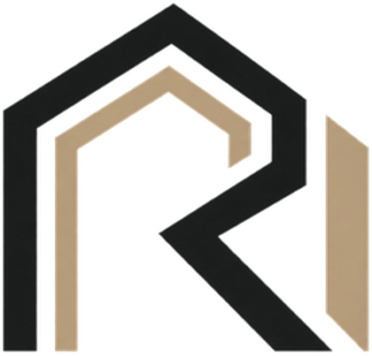
      <span>Remis à Neuf</span>
    </div>

    <p class="kicker">Supports de marque · Octobre 2026</p>
    <h1>Tout ce que la marque<br><em>montre aujourd’hui.</em></h1>
    <p class="lead">Logo, cartes de visite et site web réunis au même endroit, avec pour chaque support son état réel et ce qu’il reste à trancher avant diffusion.</p>

    <dl class="meta">
      <div>
        <dt>Activité</dt>
        <dd>Rénovation d’appartements</dd>
      </div>
      <div>
        <dt>Zone</dt>
        <dd>Nice · Côte d’Azur</dd>
      </div>
      <div>
        <dt>Supports</dt>
        <dd>3 familles</dd>
      </div>
      <div>
        <dt>Statut</dt>
        <dd>Première version</dd>
      </div>
    </dl>
  </header>

  <!-- ===== 01 Identité ===== -->
  <section class="sec wrap">
    <div class="shead">
      <div>
        <p class="kicker"><span class="num">01</span> Identité</p>
        <h2>Un monogramme qui tient<br>à toutes les tailles.</h2>
      </div>
      <p class="body small">Le symbole combine la lettre R et une silhouette d’arche. Trois déclinaisons couvrent tous les usages : fond clair, fond sombre, et une version compacte avec le nom.</p>
    </div>

    <div class="specimens">
      <div class="spec">
        <div class="spec__stage spec__stage--light">
          
        </div>
        <div class="spec__foot">
          <h3>Symbole bichrome</h3>
          <p>Version principale. Fonds blanc et sable clair.</p>
        </div>
      </div>

      <div class="spec">
        <div class="spec__stage spec__stage--dark">
          
        </div>
        <div class="spec__foot">
          <h3>Symbole blanc</h3>
          <p>Fonds charbon, photographies sombres, pied de page.</p>
        </div>
      </div>

      <div class="spec">
        <div class="spec__stage spec__stage--paper">
          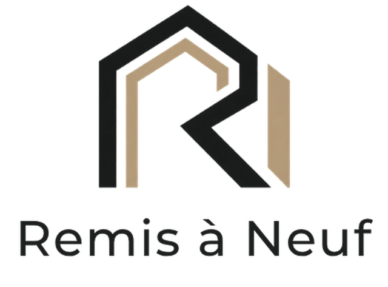
        </div>
        <div class="spec__foot">
          <h3>Verrou compact</h3>
          <p>Symbole et nom groupés. Formats réduits, tampons, favicon.</p>
        </div>
      </div>

      <div class="spec">
        <div class="spec__stage spec__stage--light">
          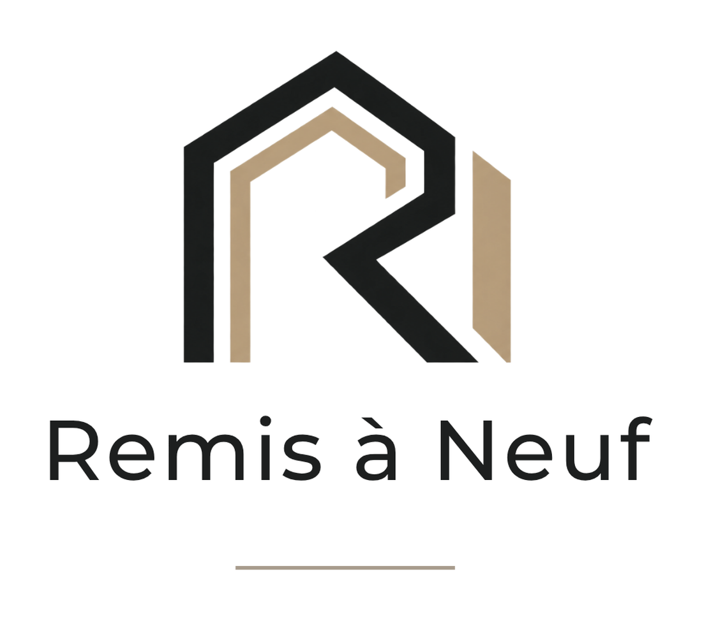
        </div>
        <div class="spec__foot">
          <h3>Logotype complet</h3>
          <p>Avec filet. Couverture de devis, page de garde, signature.</p>
        </div>
      </div>
    </div>

    <ul class="rules">
      <li><b>Écriture</b><span><strong>Remis à Neuf</strong> — R et N en capitale, accent sur le à. Jamais « Remis à neuf », « Remis a Neuf » ni en majuscules intégrales.</span></li>
      <li><b>Baseline</b><span>Aucune accroche n’est accolée au logo. La promesse se dit dans le texte qui l’entoure, pas dans la marque.</span></li>
      <li><b>Taille mini</b><span>Symbole seul : <span class="mono">24 px</span> à l’écran. Verrou compact : <span class="mono">90 px</span> de large.</span></li>
      <li><b>Fonds</b><span>Blanc, sable clair ou charbon uni. Jamais posé sur une photographie chargée.</span></li>
    </ul>
  </section>

  <!-- ===== 02 Palette ===== -->
  <section class="sec wrap">
    <div class="shead">
      <div>
        <p class="kicker"><span class="num">02</span> Palette</p>
        <h2>Trois couleurs, pas une<br>de plus.</h2>
      </div>
      <p class="body small">Le charbon porte le texte et les aplats sombres. Le sable ne sert qu’aux accents : filets, numéros, soulignement. Le blanc fait le reste.</p>
    </div>

    <div class="swatches">
      <div class="sw">
        <div class="sw__chip" style="background:#171918"></div>
        <div class="sw__body">
          <p class="sw__name">Charbon</p>
          <button class="sw__hex" type="button" data-copy="#171918">#171918</button>
          <p class="sw__use">Texte courant, boutons principaux, grandes sections sombres.</p>
        </div>
      </div>

      <div class="sw">
        <div class="sw__chip" style="background:#c9b08a"></div>
        <div class="sw__body">
          <p class="sw__name">Sable</p>
          <button class="sw__hex" type="button" data-copy="#c9b08a">#C9B08A</button>
          <p class="sw__use">Accents et filets. Sur fond clair, passer à <span class="mono">#A88F69</span> pour rester lisible.</p>
        </div>
      </div>

      <div class="sw">
        <div class="sw__chip" style="background:#ffffff;box-shadow:inset 0 0 0 1px var(--line)"></div>
        <div class="sw__body">
          <p class="sw__name">Blanc</p>
          <button class="sw__hex" type="button" data-copy="#ffffff">#FFFFFF</button>
          <p class="sw__use">Fond principal. Décliné en sable très clair <span class="mono">#FAF8F5</span> pour alterner les sections.</p>
        </div>
      </div>
    </div>
  </section>

  <!-- ===== 03 Typographie ===== -->
  <section class="sec wrap">
    <div class="shead">
      <div>
        <p class="kicker"><span class="num">03</span> Typographie</p>
        <h2>Une seule famille,<br>bien réglée.</h2>
      </div>
      <p class="body small">Une sans-serif géométrique contemporaine. Avenir Next lorsqu’elle est installée, sinon Manrope, qui est gratuite et disponible partout.</p>
    </div>

    <div class="typespec">
      <div class="typecard">
        <p class="typecard__label">Titres — 500</p>
        <p class="typecard__big">Votre intérieur,<br>remis à neuf.</p>
        <p class="typecard__row"><b>Interlettrage</b> resserré à −4,5 %<br><b>Interligne</b> 0,98 — les titres doivent se tenir en bloc</p>
      </div>
      <div class="typecard">
        <p class="typecard__label">Texte — 400 / 600</p>
        <p style="font-size:19px;line-height:1.55;letter-spacing:-.012em">Rénovation d’appartements tous corps d’état à Nice et sur la Côte d’Azur.</p>
        <p class="typecard__row" style="margin-top:20px"><b>Courant</b> 16 px, interligne 1,62<br><b>Étiquettes</b> 11 px, capitales, interlettrage +22 %</p>
      </div>
    </div>
  </section>

  <!-- ===== 04 Cartes de visite ===== -->
  <section class="sec wrap">
    <div class="shead">
      <div>
        <p class="kicker"><span class="num">04</span> Cartes de visite</p>
        <h2>Deux fonds, une même<br>composition.</h2>
      </div>
      <p class="body small">Symbole surdimensionné à gauche, bloc d’information à droite, filet de séparation. Les deux versions sont interchangeables selon le papier retenu.</p>
    </div>

    <div class="cards">
      <article class="card">
        <figure>
          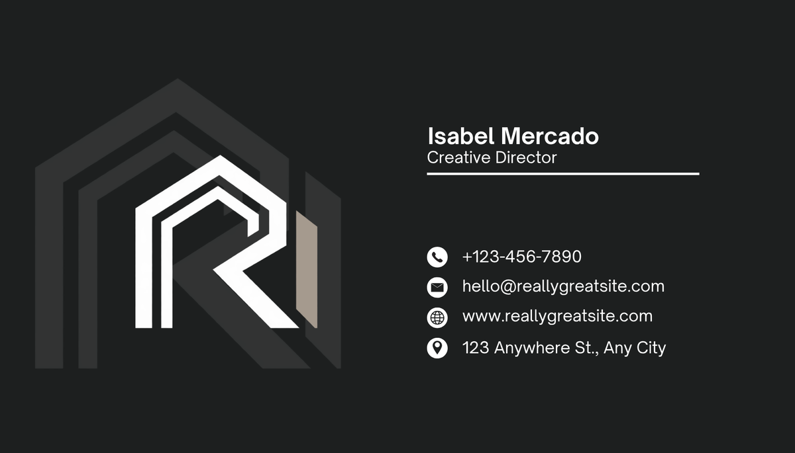
          <figcaption><b>Version charbon</b><span>85 × 55 mm</span></figcaption>
        </figure>
      </article>
      <article class="card">
        <figure>
          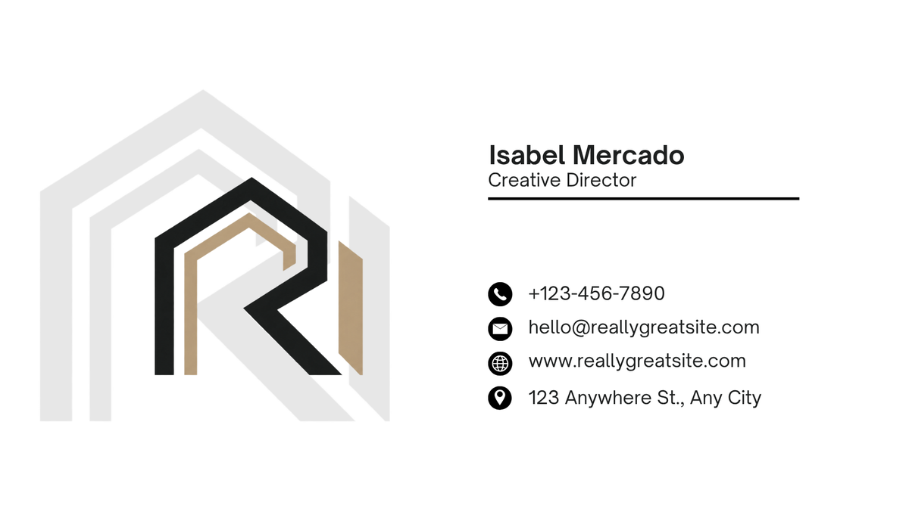
          <figcaption><b>Version blanche</b><span>85 × 55 mm</span></figcaption>
        </figure>
      </article>
    </div>

    <div class="note">
      <h3>À remplacer avant toute impression</h3>
      <p>Les deux cartes affichent encore le contenu de démonstration du gabarit. Aucune de ces informations ne concerne Remis à Neuf :</p>
      <ul>
        <li><span class="mono">Isabel Mercado</span> et <span class="mono">Creative Director</span> — nom et fonction fictifs</li>
        <li><span class="mono">+123-456-7890</span> — numéro fictif</li>
        <li><span class="mono">hello@reallygreatsite.com</span> et <span class="mono">www.reallygreatsite.com</span> — adresses fictives</li>
        <li><span class="mono">123 Anywhere St., Any City</span> — adresse postale fictive</li>
      </ul>
    </div>
  </section>

  <!-- ===== 05 Site web ===== -->
  <section class="sec wrap">
    <div class="shead">
      <div>
        <p class="kicker"><span class="num">05</span> Site web</p>
        <h2>Une page, construite<br>pour la demande de devis.</h2>
      </div>
      <p class="body small">Onze sections qui ramènent toutes au même geste : décrire son appartement et obtenir une estimation. En ligne et consultable.</p>
    </div>

    <div class="shots">
      <article class="shot">
        <figure>
          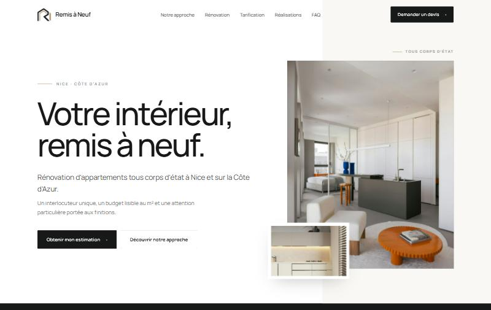
          <figcaption><b>Accueil</b>Titre, promesse et double appel à l’action.</figcaption>
        </figure>
      </article>
      <article class="shot">
        <figure>
          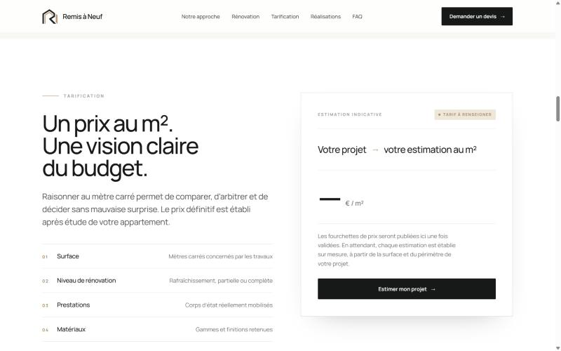
          <figcaption><b>Tarification</b>Les cinq facteurs de prix et la fiche d’estimation.</figcaption>
        </figure>
      </article>
      <article class="shot">
        <figure>
          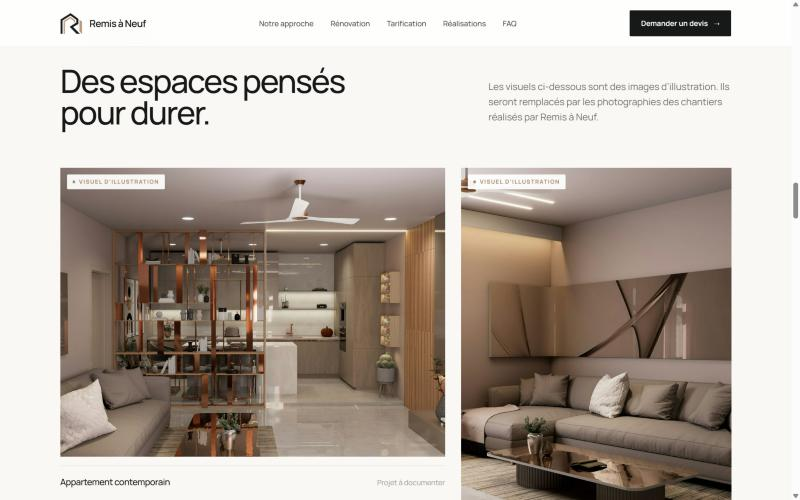
          <figcaption><b>Réalisations</b>Grille éditoriale, visuels d’illustration signalés.</figcaption>
        </figure>
      </article>
      <article class="shot">
        <figure>
          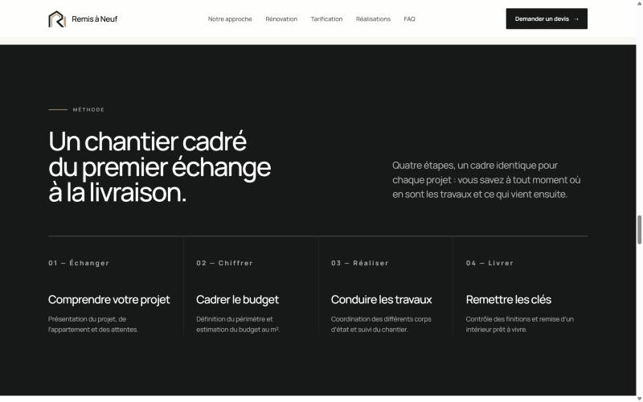
          <figcaption><b>Méthode</b>Les quatre étapes, du premier échange à la livraison.</figcaption>
        </figure>
      </article>
    </div>

    <div class="siteline">
      <div>
        <h3 style="font-size:19px;letter-spacing:-.025em;margin-bottom:12px">Ce qui reste provisoire</h3>
        <p class="body small">Le site est complet et fonctionne, mais trois contenus attendent encore une décision : le <strong style="color:var(--ink);font-weight:500">prix au m²</strong>, affiché en tiret tant qu’aucune fourchette n’est validée, les <strong style="color:var(--ink);font-weight:500">coordonnées</strong>, signalées par des pastilles sable, et les <strong style="color:var(--ink);font-weight:500">photographies de chantiers</strong>, aujourd’hui des images d’illustration explicitement marquées comme telles.</p>
        <p class="body small" style="margin-top:14px">Le formulaire de devis est prêt à être relié à une boîte mail ou à un outil de suivi : une seule ligne de configuration à renseigner.</p>

        <div class="links">
          <a href="https://amazing-sable-e931e5.netlify.app/" target="_blank" rel="noopener">
            <div>
              <p class="lbl">Site en ligne</p>
              <b>Voir le site</b>
            </div>
            <span class="mono">amazing-sable-e931e5.netlify.app</span>
          </a>
          <a href="https://github.com/AlexandreTorre2511/remis-a-neuf" target="_blank" rel="noopener">
            <div>
              <p class="lbl">Code source</p>
              <b>Dépôt GitHub</b>
            </div>
            <span class="mono">AlexandreTorre2511/remis-a-neuf</span>
          </a>
          <div>
            <div>
              <p class="lbl">Technique</p>
              <b>Site statique</b>
            </div>
            <span class="mono">2 Mo · 0 dépendance</span>
          </div>
        </div>
      </div>

      <div class="phone">
        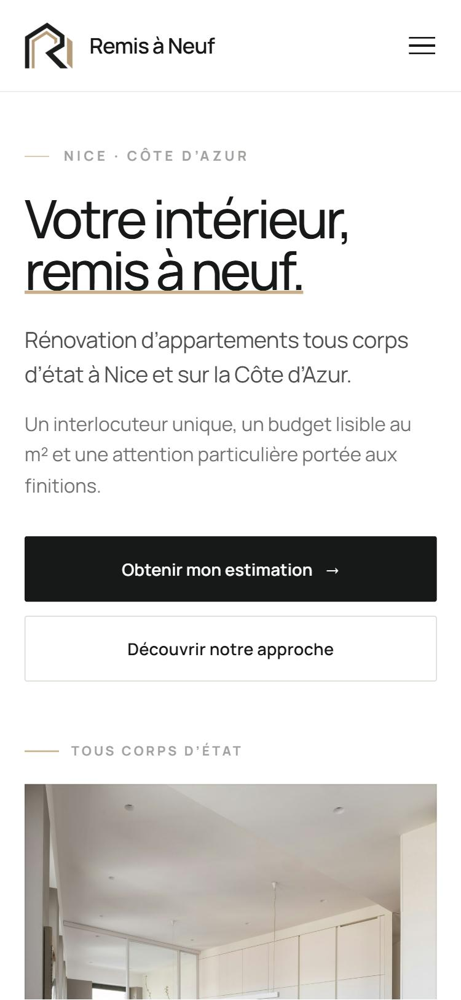
        <p>375 px</p>
      </div>
    </div>
  </section>

  <!-- ===== 06 Arbitrages ===== -->
  <section class="sec wrap">
    <div class="shead">
      <div>
        <p class="kicker"><span class="num">06</span> À trancher ensemble</p>
        <h2>Six décisions avant<br>de diffuser.</h2>
      </div>
      <p class="body small">Rien ici ne bloque la lecture des supports. Ce sont les points qui demandent un arbitrage à deux avant d’imprimer ou de communiquer.</p>
    </div>

    <ol class="todo">
      <li>
        <span class="n">01</span>
        <div>
          <h3>Le prix au m²</h3>
          <p>Fourchette basse et haute, ou prix unique par niveau de rénovation. C’est l’argument central du site : il reste vide tant qu’il n’est pas arrêté.</p>
        </div>
      </li>
      <li>
        <span class="n">02</span>
        <div>
          <h3>Les coordonnées</h3>
          <p>Téléphone, email et adresse. Ils conditionnent les cartes de visite, le pied de page, les mentions légales et la fiche Google.</p>
        </div>
      </li>
      <li>
        <span class="n">03</span>
        <div>
          <h3>Les photographies</h3>
          <p>Deux à trois chantiers photographiés, avec un avant et un après cadrés depuis le même point de vue. C’est ce qui transformera la galerie en preuve.</p>
        </div>
      </li>
      <li>
        <span class="n">04</span>
        <div>
          <h3>Le nom de domaine</h3>
          <p>L’adresse actuelle est une adresse technique provisoire. Un domaine propre reste à réserver et à brancher.</p>
        </div>
      </li>
      <li>
        <span class="n">05</span>
        <div>
          <h3>Les mentions légales</h3>
          <p>SIRET, forme juridique, assurance décennale et responsabilité civile. La trame existe, les données manquent.</p>
        </div>
      </li>
      <li>
        <span class="n">06</span>
        <div>
          <h3>La direction graphique</h3>
          <p>Une seconde piste existe par ailleurs, bâtie sur un symbole carré et une palette ocre et vert. Elle ne correspond pas aux supports présentés ici. Il faut en retenir une seule.</p>
        </div>
      </li>
    </ol>
  </section>

  <footer class="wrap foot">
    <p>Document de travail interne. Les visuels d’intérieur utilisés sur le site sont des images d’illustration temporaires et ne représentent pas de chantiers réalisés par Remis à Neuf.</p>
  </footer>

</main>

<script>
  document.querySelectorAll('.sw__hex').forEach(function (btn) {
    btn.addEventListener('click', function () {
      var value = btn.getAttribute('data-copy');
      var done = function () {
        btn.classList.add('ok');
        setTimeout(function () { btn.classList.remove('ok'); }, 1400);
      };
      if (navigator.clipboard && navigator.clipboard.writeText) {
        navigator.clipboard.writeText(value).then(done).catch(function () { select(); });
      } else {
        select();
      }
      function select() {
        var r = document.createRange();
        r.selectNodeContents(btn);
        var s = window.getSelection();
        s.removeAllRanges();
        s.addRange(r);
      }
    });
  });
</script>
